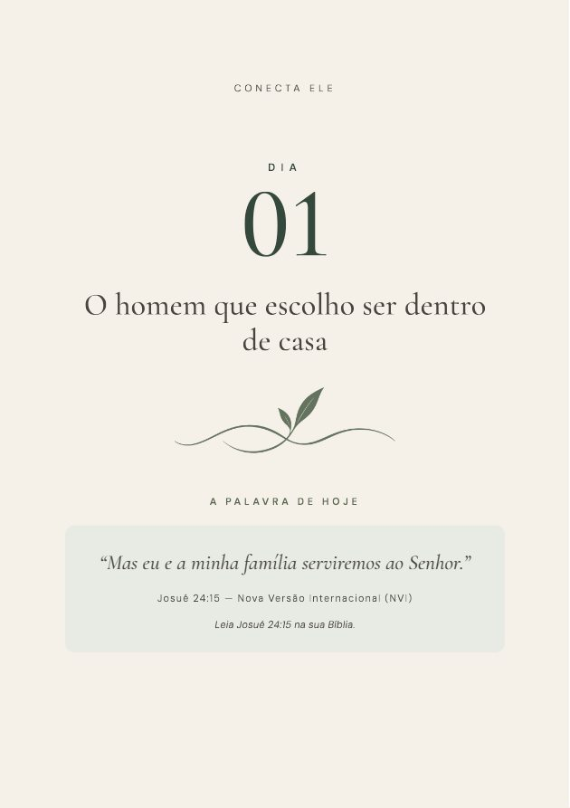
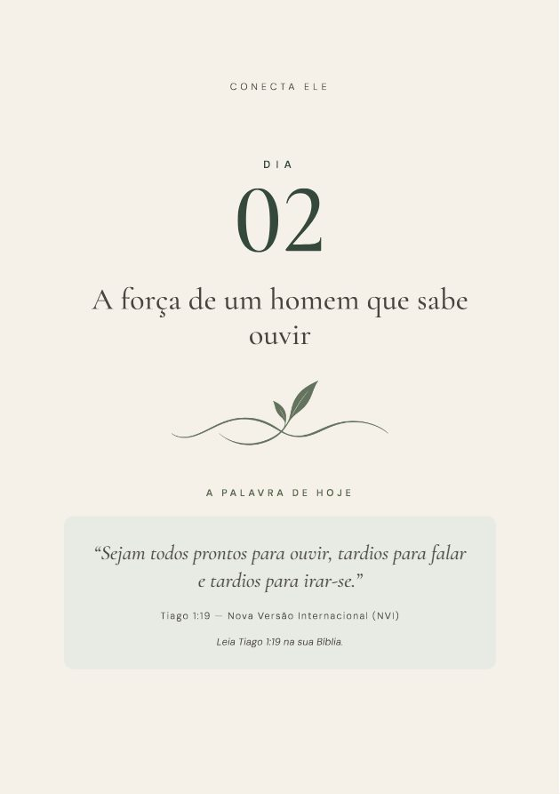
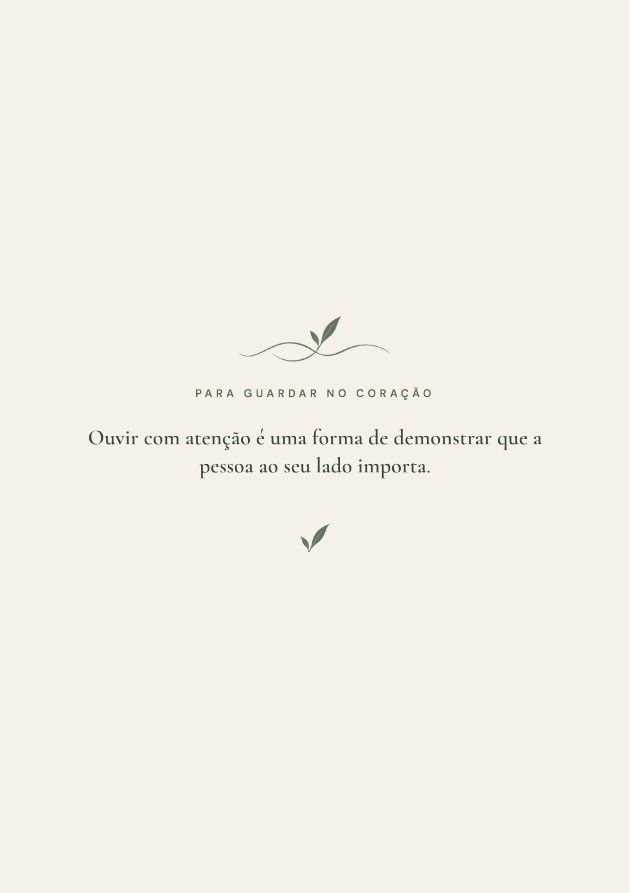
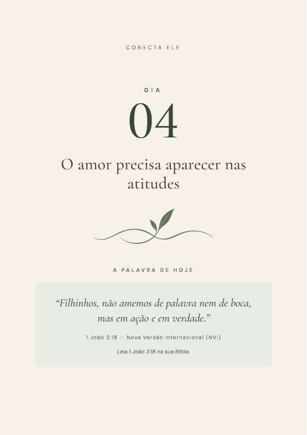
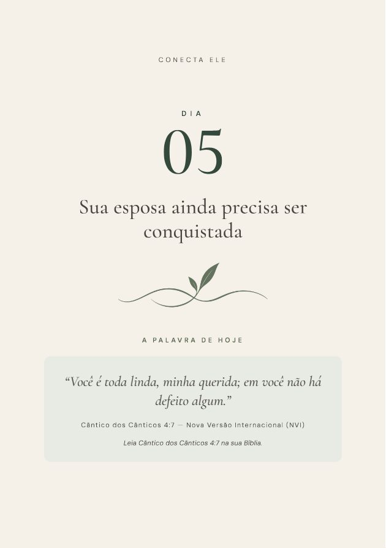
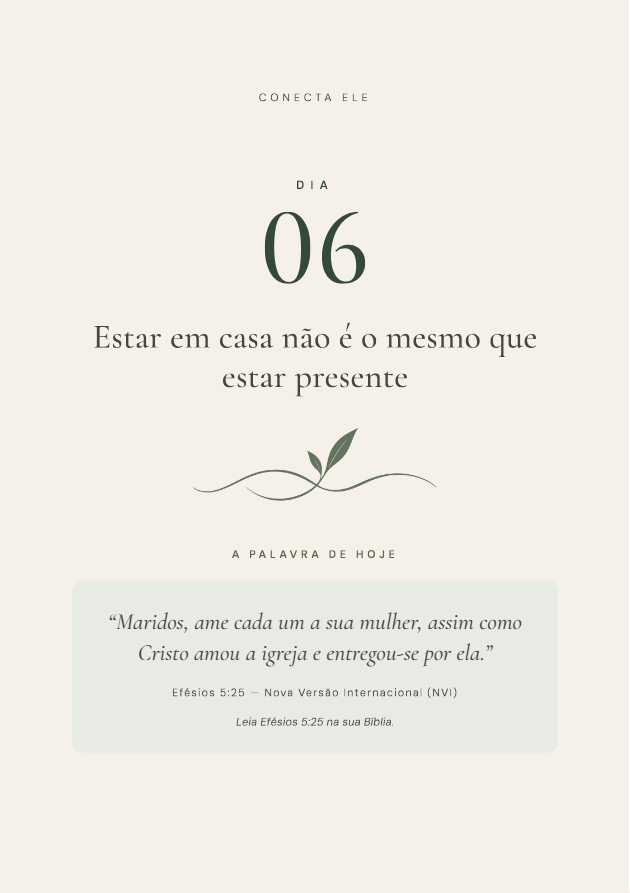
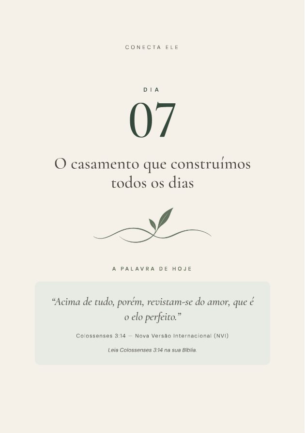

DIA 01
O homem que escolho ser dentro de casa
Presença e responsabilidade.Como suas atitudes em casa mostram o lugar do casamento nas suas prioridades.
No CONECTA ELE, você terá acesso a uma jornada de sete dias pensada para ajudar você a cuidar do seu casamento sem precisar mudar toda a sua rotina.
A cada dia, você encontrará:
Para começar a reflexão à luz da Palavra de Deus.
Para reconhecer situações comuns do casamento e perceber como suas escolhas influenciam a convivência.
Para olhar para suas atitudes com sinceridade, sem procurar culpados.
Para experimentar uma pequena escolha de cuidado, respeito, presença ou parceria.
Para apresentar a Deus aquilo que deseja amadurecer e cultivar.
Você só precisa estar disposto a olhar para suas escolhas e dar um passo de cada vez.

Se você se identificou, o CONECTA ELE foi pensado para essa fase da sua vida.
Não para mostrar que seu casamento está errado.
Mas para lembrar que até os relacionamentos saudáveis precisam ser cultivados.
Nem todo distanciamento começa com uma grande discussão.
Às vezes, começa quando os dias passam e o relacionamento recebe apenas o tempo que sobra.
E, sem perceber, marido e esposa podem passar a conversar mais sobre o que precisam resolver do que sobre o que estão vivendo.
Não significa necessariamente que o amor acabou.
Mas pode significar que o cuidado com a relação deixou de ser intencional.
O problema de esperar a rotina ficar mais tranquila é que sempre haverá alguma coisa para fazer.
O CONECTA ELE foi criado para ajudar você a encontrar pequenas oportunidades de cultivar o relacionamento dentro da vida que já tem.
A proposta é simples: começar pela parte que está ao seu alcance.

Um casamento saudável não depende de demonstrações grandiosas todos os dias. Ele também é construído quando você decide ouvir com atenção.
São atitudes pequenas o suficiente para fazer parte da rotina, mas importantes demais para serem deixadas sempre para depois.
O CONECTA ELE reúne essas reflexões em uma jornada organizada, para que você não precise descobrir sozinho por onde começar.

Presença e responsabilidade.Como suas atitudes em casa mostram o lugar do casamento nas suas prioridades.

Diálogo e compreensão.A diferença entre ouvir para responder e ouvir para compreender.

Reconhecimento e admiração.Continuar interessado na mulher que sua esposa é, além das funções da rotina.

Cuidado e parceria.Demonstrar amor com atitudes concretas e responsabilidades compartilhadas.

Carinho e iniciativa.Continuar demonstrando interesse, ternura e admiração depois do casamento.

Tempo e prioridades.Espaços possíveis para cultivar o relacionamento, mesmo numa rotina cheia.

Compromisso e continuidade.Transformar a jornada em uma escolha prática para continuar cultivando o casamento.
A mudança começa nas escolhas que você faz dentro de casa.

Você pode terminar a leitura de um texto e concordar com tudo o que ele diz.
Mas concordar não é o mesmo que agir.
Por isso, cada dia do CONECTA ELE termina com uma proposta prática.
A proposta é ajudar você a reconhecer atitudes que pode cultivar de maneira respeitosa e realista.
Porque a transformação que buscamos começa na disposição de viver aquilo que aprendemos.
Mesmo que vocês já tenham uma boa relação e não estejam enfrentando uma crise.
E quer encontrar maneiras possíveis de cuidar do casamento sem depender de grandes acontecimentos.
E quer refletir sobre o casamento a partir de princípios bíblicos aplicados à vida cotidiana.
Sem buscar perfeição e sem assumir sozinho a responsabilidade por toda a relação.
É uma ferramenta de reflexão e prática para homens que desejam cultivar o casamento com fé, respeito e intencionalidade.
Ao adquirir o CONECTA ELE, você também receberá:
BÔNUS EXCLUSIVO — HOMENS DA BÍBLIA
5 lições de fé, caráter e atitude para fortalecer seu casamento.
Um material complementar que apresenta cinco personagens bíblicos e os princípios que podemos aprender com suas histórias.
O valor de assumir compromissos com maturidade.
A importância de tratar a mulher com respeito e dignidade.
O valor da colaboração na vida compartilhada.
A necessidade de reconhecer erros e buscar mudanças verdadeiras.
Como enfrentar incertezas buscando a direção de Deus e agindo com responsabilidade.
Cada lição inclui contexto bíblico, reflexão, perguntas pessoais, uma atitude prática e oração.
Veja tudo o que está incluído:
Talvez sua agenda não fique mais tranquila amanhã. Talvez as responsabilidades continuem exigindo muito de você.
Mas cuidar do casamento não precisa depender de uma fase perfeita da vida.
O CONECTA ELE foi criado para ajudar você a começar com o que tem, onde está.
Você receberá:
CONECTA ELE + BÔNUS HOMENS DA BÍBLIA
R$ 37
ou 12x de R$ 3,83 no cartão
Quero começar os meus 7 dias ↘Compra realizada em ambiente de pagamento seguro.
Você terá sete dias, a partir da compra, para conhecer o material e avaliar se ele faz sentido para você.
Se decidir que não é o que procurava, poderá solicitar o cancelamento e o reembolso integral dentro desse prazo, conforme as condições informadas na plataforma de pagamento.
Sem precisar justificar sua decisão.
Somos os Mirandas.
Estamos casados há 17 anos e acreditamos que o casamento é construído na vida real.
Compartilhamos uma visão de casamento com Deus no centro, em que amor, respeito, parceria e intencionalidade precisam fazer parte da caminhada dos dois.
Acreditamos que um relacionamento não precisa estar em crise para merecer cuidado.
Foi dessa convicção que nasceu o CONECTA ELE.
Um convite para que homens casados olhem para suas próprias atitudes, cultivem sua fé e encontrem maneiras práticas de fortalecer a relação.
Não acreditamos em casamentos perfeitos. Acreditamos em pessoas dispostas a continuar aprendendo a amar.
Fernanda e Leandro — Os Mirandas
O amor mora nas pequenas escolhas. ♡

É um devocional digital de sete dias.
Cada dia reúne uma passagem bíblica, uma reflexão, perguntas pessoais, uma atitude prática e uma oração.
Não é um curso em vídeo nem uma mentoria individual.
Não.
O material também foi criado para homens que vivem um relacionamento saudável e desejam continuar cultivando a conexão, o respeito e a parceria.
Não.
O CONECTA ELE foi desenvolvido para a reflexão pessoal do homem.
Algumas propostas envolvem conversas ou momentos compartilhados, mas sua esposa não precisa ler o material nem realizar as atividades.
A proposta é que você reserve alguns minutos para ler, refletir e orar.
O tempo das atitudes práticas pode variar conforme a proposta e a realidade da sua rotina.
Sim.
Cada dia parte de uma passagem bíblica e apresenta uma reflexão aplicada à vida conjugal.
O conteúdo não substitui o estudo pessoal das Escrituras nem o acompanhamento pastoral quando necessário.
Sim. O bônus faz parte da oferta apresentada nesta página.
Você terá acesso a cinco lições complementares sobre responsabilidade, honra, parceria, arrependimento e fé.
O acesso é imediato e vitalício.
Pela área de membros da Hotmart. Assim que o pagamento é confirmado, você recebe por e-mail o acesso ao CONECTA ELE e ao bônus Homens da Bíblia.
Sim, dentro do prazo de garantia de sete dias, conforme as condições da compra e o procedimento indicado na plataforma de pagamento.
Não.
É um material de reflexão e desenvolvimento pessoal. Situações de sofrimento intenso, violência, coerção ou problemas persistentes podem exigir apoio profissional especializado.
Pode escolher, hoje, reservar alguns minutos para olhar para o seu casamento com mais fé, consciência e intenção.
O CONECTA ELE foi preparado para acompanhar você nessa decisão.
7 DIAS DE DEVOCIONAL + BÔNUS HOMENS DA BÍBLIA
R$ 37
ou 12x de R$ 3,83 no cartão
Quero meu CONECTA ELE ↘O amor mora nas pequenas escolhas. ♡